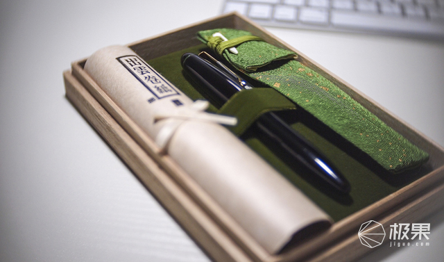

首页>导购>最新>2016，这8支钢笔够你装逼一整年
2016，这8支钢笔够你装逼一整年
苏苏2016-01-25
钢笔，作为一个书写工具，像手表一样，不但具有功能性，还拥有了装饰（bi）等功能。不过总有人在死磕钢笔的本质：

选一只钢笔
初次使用钢笔该如何选择，这是个老生常谈的问题了，具体其实没什么好讲的，因为不但那些昂贵的钢笔，每支都有自己的个性，相对廉价的钢笔更是如此。所以还是要尽量自己去实体店尝试，看看手感是否适合自己。

其次，因为现代许多人都是一直用圆珠笔和中性笔，所以总想要求钢笔的笔迹也要像中性笔一样细，这也算是一个误区，钢笔的笔迹一般都不会很细，其实细的笔尖，品控等方面未必能做好。总之粗细问题习惯就好，毕竟中文字体本来就不太适合很细的笔迹去表现。

再者就是选择的时候，不要觉得金尖的手感就一定比钢尖要好，还是要自己去尝试。还有重量一定要好好考虑，太重的钢笔虽然有的时候手感很好，但是写久了会很累，适合少量高质的书写。
什么是好钢笔

一支钢笔，笔尖分为明尖和暗尖，一般来说明尖会更为软，而暗尖会比较硬。明尖很容易达到软弹的效果，而暗尖则比较容易达到硬滑的效果，日常大量书写的话，更推荐暗尖，不过如果是领导签字，自然需要一款帅气的明尖才行（也不绝对，比如麦克阿瑟使用的派克51，则有一种军人的饱满和刚毅的美感。）

如果说钢笔的灵魂在于笔尖，那么笔尖的灵魂，就在于铱粒了，各厂有各厂不同的铱粒，其组成和打磨都各不相同。其中最有名的犀飞利（西华）其铱粒的耐磨程度其余各厂望尘莫及。大家挑选钢笔最好也考虑下自己的风格，比如说有人将铱粒的打磨分为刀锋打磨和普通的胖头尖，其实并不存在孰优孰劣，只是所谓的刀锋打磨，更容易表现笔画的粗细罢了（相对的书写速度会减慢，磨损也会加快。）各厂不同产地的铱粒，也会有不同，比如派克世纪现产的法产笔尖，就没有英产的耐磨。
